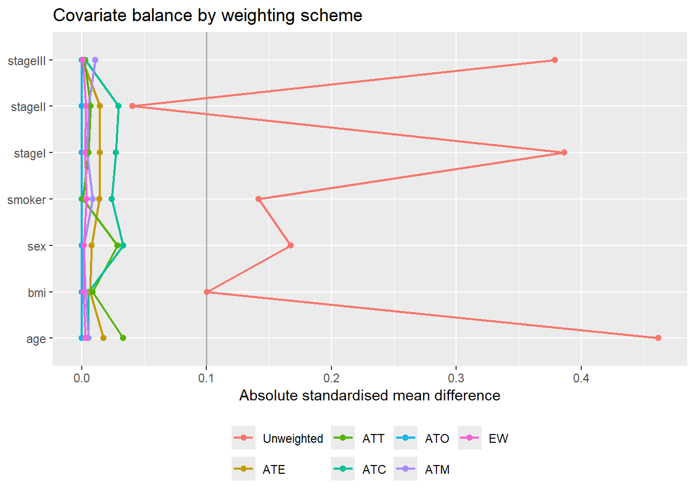
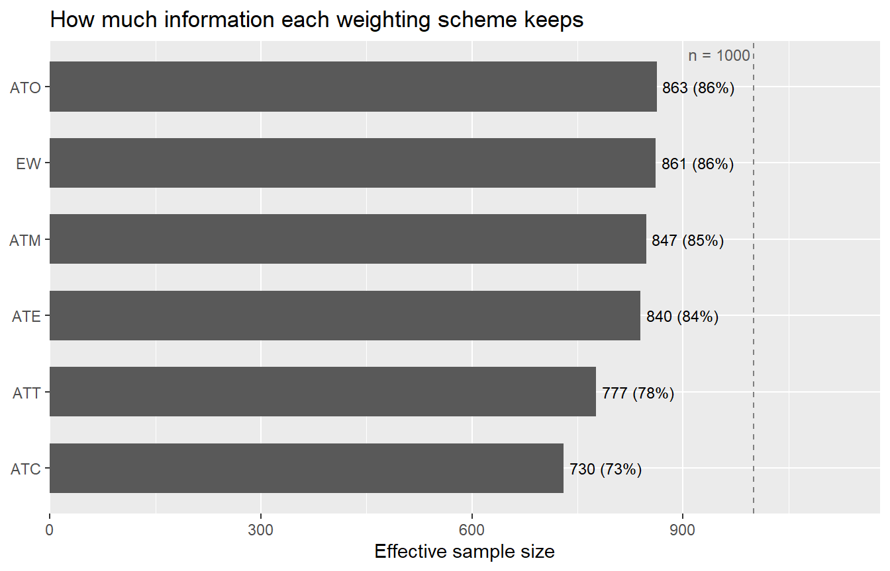
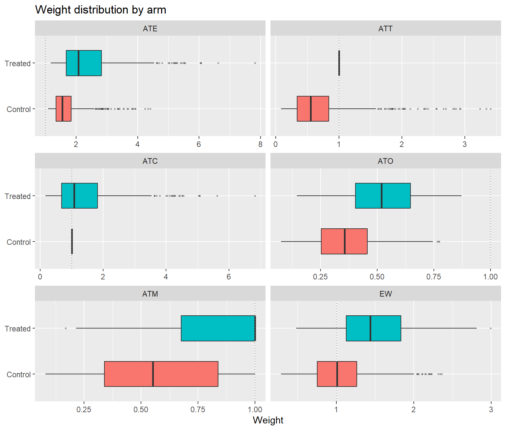
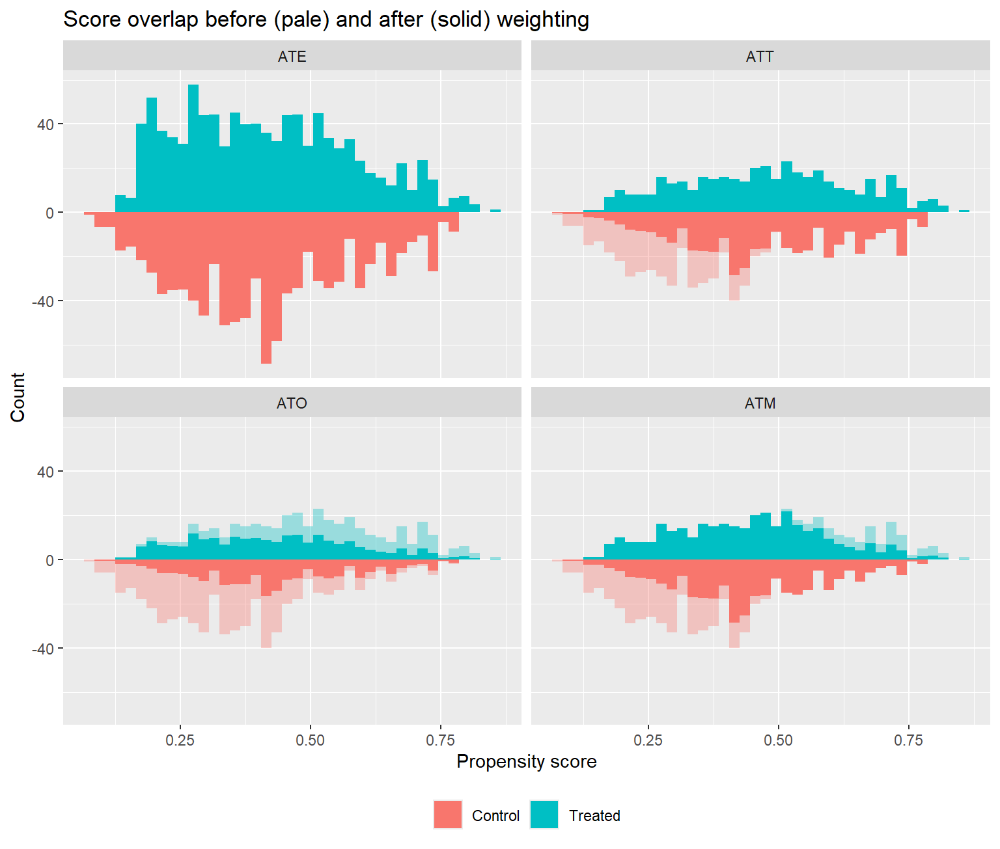
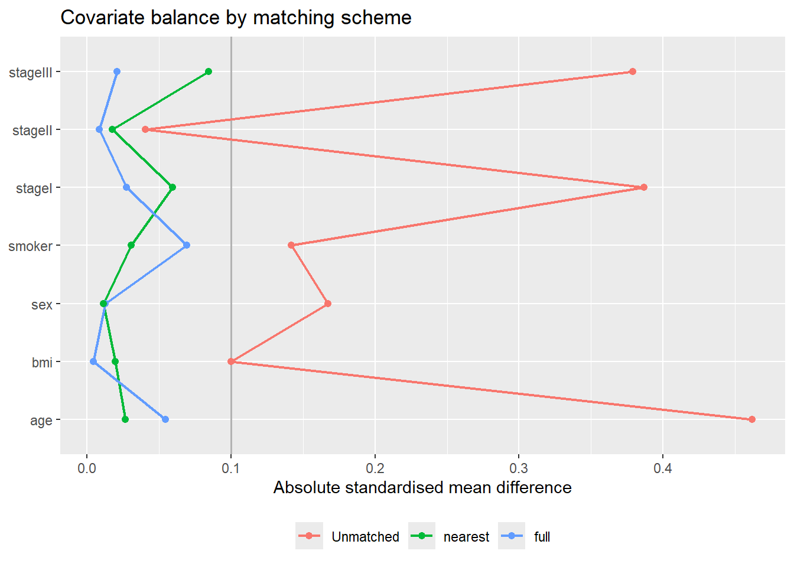
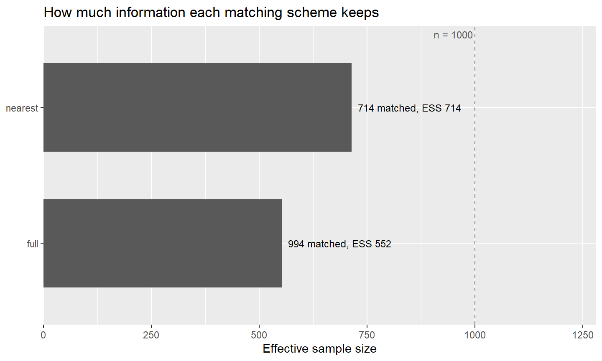
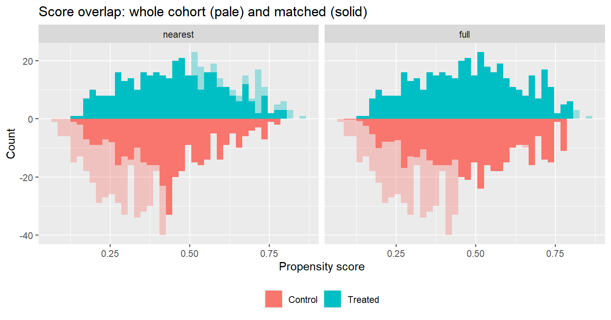
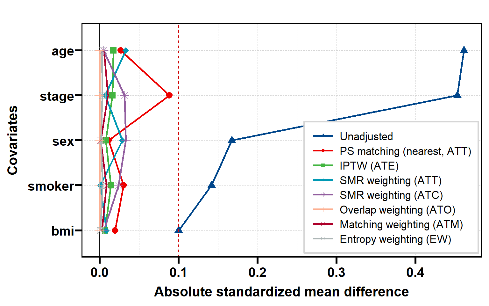
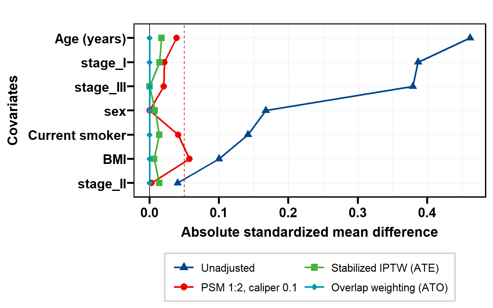

set.seed(20260928)
n <- 1000
d <- data.frame(
age = round(rnorm(n, 62, 10)),
sex = factor(sample(c("Female", "Male"), n, replace = TRUE)),
stage = factor(sample(c("I", "II", "III"), n, replace = TRUE,
prob = c(0.40, 0.35, 0.25))),
bmi = round(rnorm(n, 25, 4), 1),
smoker = rbinom(n, 1, 0.3)
)
lp <- -1.4 + 0.06 * (d$age - 62) + 0.5 * (d$sex == "Male") +
0.7 * (d$stage == "II") + 1.4 * (d$stage == "III") -
0.05 * (d$bmi - 25) + 0.6 * d$smoker
d$z <- rbinom(n, 1, plogis(lp))
d$y <- round(10 + 0.2 * (d$age - 62) + 1.5 * (d$stage == "III") +
0.8 * d$smoker + 1 * d$z + rnorm(n, sd = 2), 2)
adj <- c("age", "sex", "stage", "bmi", "smoker")
c(treated = mean(d$z), naive_diff = unname(diff(tapply(d$y, d$z, mean))))
#> treated naive_diff
#> 0.414000 1.9359513. 倾向评分匹配、加权与平衡：get_PSM() / get_PSW() / get_bal()
causalR 包函数手册
这三个函数处理的是同一件事的三个侧面：用一个倾向得分构造可比的两组，并检查它们是否真的可比。 它们只做”设计”——构造权重、匹配队列、诊断平衡——不估计治疗效应； 效应留给你挑定方案之后的结局模型。
| 函数 | 做什么 | 返回 | 配套绘图 |
|---|---|---|---|
get_PSW() |
一个倾向得分 → 最多六种倾斜函数权重（IPTW、SMR、重叠、匹配、熵权重），并排比较有效样本量、权重分布与平衡 | psw_res |
plt_PSW() |
get_PSM() |
一个倾向得分 → MatchIt 的任意几种匹配算法，并排比较保留样本、匹配权重与平衡 | psm_res |
plt_PSM() |
get_bal() |
匹配与加权方案混在一起，画在同一张 love plot 上；可选生成每个方案的基线表 | 列表（图、平衡表、权重、表） | 自带 |
get_PSW() 与 get_PSM() 是一对：共用倾向得分模型、w_ 权重列命名和诊断表结构。 有一个参数名要特别注意：
get_PSW() |
get_PSM() |
|
|---|---|---|
| 选倾向得分模型 | method（"glm"、"gbm"、"cbps"、"bart"、"super"） |
ps_method |
| 选方案 | estimand（六种权重） |
method（匹配算法），estimand 只取一个 |
安装与核对环境
remotes::install_github("HUI950319/causalR") # Imports 已含 MatchIt、WeightIt、cobalt
install.packages(c("halfmoon", "optmatch", "gtsummary", "survey"))halfmoon 给 get_PSW() / get_PSM() 算平衡表（balance = TRUE，默认）； optmatch 是 "optimal" 与 "full" 匹配的后端；gtsummary + survey 只有 get_bal(tbl = TRUE) 要用。本页核对于 2026 年 9 月 28 日，代码块由本站渲染时真实执行：
| 项目 | 值 |
|---|---|
| causalR | 0.0.0.9000（GitHub main） |
| MatchIt / WeightIt | 4.7.2 / 1.4.0 |
| cobalt / halfmoon | 4.6.0 / 0.2.0 |
示例数据
一个有混杂的观察性队列：年龄、性别、分期、BMI、吸烟都影响是否接受治疗， 其中年龄、分期、吸烟同时影响结局。治疗效应恒为 1，所以 ATE、ATT、ATO 等估计量的真值都是 1。
不调整的组间差约为真值的两倍——治疗组更老、分期更晚、吸烟更多。
get_PSW()：六种权重一次看完
pw <- get_PSW(d, treat = "z", adj_var = adj)
pw
#> <psw_res> n = 1000 (0 trimmed), treat = z (treated = 1), score from method = "glm"
#> score range c(0.0746, 0.856)
#>
#> # A tibble: 6 × 15
#> estimand n n_treat n_ctrl ess ess_treat ess_ctrl ess_pct w_min w_max
#> <chr> <int> <int> <int> <dbl> <dbl> <dbl> <dbl> <dbl> <dbl>
#> 1 ATE 1000 414 586 840. 347. 531. 0.840 1.08 7.83
#> 2 ATT 1000 414 586 777. 414 365. 0.777 0.0806 3.41
#> 3 ATC 1000 414 586 730. 265. 586 0.730 0.169 6.83
#> 4 ATO 1000 414 586 863. 378. 503. 0.863 0.0746 0.872
#> 5 ATM 1000 414 586 847. 383. 474. 0.847 0.0806 1
#> 6 EW 1000 414 586 861. 372. 511. 0.861 0.287 2.99
#> # ℹ 5 more variables: w_mean <dbl>, w_sd <dbl>, w_cv <dbl>, smd_max <dbl>,
#> # smd_over <dbl>
#>
#> # ESS is (sum w)^2 / sum w^2. smd_max / smd_over are NA unless balance = TRUE.
#> # plt_PSW: type = "love"倾向得分只拟合一次，六种权重共用它。$stats 每种权重一行，15 列固定：
pw$stats[, c("estimand", "ess", "ess_pct", "w_min", "w_max", "w_cv",
"smd_max", "smd_over")]
#> # A tibble: 6 × 8
#> estimand ess ess_pct w_min w_max w_cv smd_max smd_over
#> <chr> <dbl> <dbl> <dbl> <dbl> <dbl> <dbl> <dbl>
#> 1 ATE 840. 0.840 1.08 7.83 0.437 1.74e- 2 0
#> 2 ATT 777. 0.777 0.0806 3.41 0.536 3.32e- 2 0
#> 3 ATC 730. 0.730 0.169 6.83 0.608 3.32e- 2 0
#> 4 ATO 863. 0.863 0.0746 0.872 0.399 8.31e-14 0
#> 5 ATM 847. 0.847 0.0806 1 0.425 1.07e- 2 0
#> 6 EW 861. 0.861 0.287 2.99 0.401 3.69e- 3 0有效样本量 \(\text{ESS} = (\sum w)^2 / \sum w^2\)：本例 ATO 保留的信息最多， ATC 最少；ess_pct 是它占样本量的比例。 smd_max 是各协变量绝对 SMD 的最大值， smd_over 数超过 0.1 的个数。ATO 一行的 smd_max 小到 \(10^{-13}\) 量级： 倾向得分是对同一组协变量的 logistic 回归时，重叠权重让两臂协变量均值精确相等， 这是它的代数性质，不是巧合。
六种权重
记 \(e = P(Z = 1 \mid X)\)，倾斜函数 \(h(e)\) 决定目标人群，权重为 \(h(e)/e\)（处理组）与 \(h(e)/(1-e)\)（对照组）（Li, Morgan & Zaslavsky, 2018）：
estimand |
\(h(e)\) | 处理组 / 对照组权重 | 常见名称 |
|---|---|---|---|
"ATE" |
\(1\) | \(1/e\) / \(1/(1-e)\) | IPTW |
"ATT" |
\(e\) | \(1\) / \(e/(1-e)\) | SMR 加权 |
"ATC" |
\(1-e\) | \((1-e)/e\) / \(1\) | 也写作 ATU |
"ATO" |
\(e(1-e)\) | \(1-e\) / \(e\) | 重叠权重（OW） |
"ATM" |
\(\min(e, 1-e)\) | — | 匹配权重 |
"EW" |
\(-\{e\ln e + (1-e)\ln(1-e)\}\) | — | 熵权重（ATEN） |
默认 method = "glm" 时，这里的权重与 WeightIt::weightit() 自己的权重逐位一致 （"EW" 在 WeightIt 里没有对应）。"cbps" 和 "gbm" 会针对某个估计量去拟合得分， 而 get_PSW() 统一用 estimand = "ATE" 拟合一次再共享，所以与 weightit(method = "cbps", estimand = "ATO") 有意不同；"gbm" 还是随机的，先 set.seed()。
修剪、截断与稳定化
处理顺序固定为：拟合（或读 ps）→ 修剪 → 可选在保留样本上重拟合 → 截断 → 构造权重 → 稳定化。
# Crump 等 (2009) 的最优对称修剪：被修剪的行保留，但得分与权重记 NA
pw_cr <- get_PSW(d, treat = "z", adj_var = adj, estimand = c("ATE", "ATO"),
trim_args = list(method = "cr"), verbose = TRUE)
#> ℹ Trimmed 12 units outside [0.122, 0.878].
pw_cr$stats[, c("estimand", "n", "n_treat", "n_ctrl", "ess", "w_max")]
#> # A tibble: 2 × 6
#> estimand n n_treat n_ctrl ess w_max
#> <chr> <int> <int> <int> <dbl> <dbl>
#> 1 ATE 988 414 574 839. 7.50
#> 2 ATO 988 414 574 863. 0.867
# 按分位数截断得分，再做稳定化 IPTW
pw_st <- get_PSW(d, treat = "z", adj_var = adj, estimand = "ATE",
stabilize = TRUE,
trunc_args = list(method = "pctl", lower = 0.01, upper = 0.99))
pw_st$stats[, c("estimand", "ess", "w_min", "w_max", "w_mean")]
#> # A tibble: 1 × 5
#> estimand ess w_min w_max w_mean
#> <chr> <dbl> <dbl> <dbl> <dbl>
#> 1 ATE 877. 0.529 3.24 0.999- 修剪（
trim_args）把单位移出分析人群："ps"按得分绝对界（默认 0.1 / 0.9）、"pctl"按分位数（默认 1% / 99%）、"cr"用数据算 Crump 最优界（不接受lower/upper）。refit = TRUE（默认）在保留样本上重拟合得分；重拟合后的得分不再修剪，所以保留单位的得分 可能落在窗口外，.trimmed列记录的是第一轮。 - 截断（
trunc_args）不删人，只把极端得分拉回界内。 - 稳定化（
stabilize = TRUE）乘以观察到的处理的边际概率，只对 ATE 有定义； 所选估计量里没有 ATE 时设TRUE会报错，而不是静默忽略。
参数
| 参数 | 默认 | 说明 |
|---|---|---|
data、treat |
— | 数据与二分类处理列（0/1、逻辑，或第二个水平为治疗组的两水平因子 / 字符） |
adj_var |
NULL |
倾向得分模型的协变量；不给 ps 时必填，balance = TRUE 时也必填 |
ps |
NULL |
已算好的得分列，严格在 (0, 1) 内；给了就跳过建模 |
estimand |
六种全选 | 每种一列权重、一行 $stats |
method |
"glm" |
倾向得分模型，经 WeightIt::weightit() 拟合、只取得分；"super" 要在 ps_args 里写 SL.library |
stabilize |
FALSE |
稳定化，仅 ATE |
trim_args |
list(method = "none", lower = NULL, upper = NULL, refit = TRUE) |
修剪 |
trunc_args |
list(method = "none", lower = 0.01, upper = 0.99) |
截断 |
balance |
TRUE |
用 halfmoon::check_balance() 算每种权重下的 SMD |
ps_args |
list() |
传给 WeightIt::weightit()，如 list(link = "probit") |
verbose |
FALSE |
报告修剪掉多少、删了多少不完整行 |
返回的 $data 是原数据加 ps、.trimmed 和 w_ate … w_ew 六列权重； $balance 是 halfmoon 的长表；$fit 是 weightit 对象（给了 ps 时为 NULL）。
plt_PSW()：四种诊断图
type 取 "love"（默认，有平衡表时）、"ess"、"weight"、"ps"， estimand 可只画其中几种：
plt_PSW(pw, "love")
plt_PSW(pw, "ess")
plt_PSW(pw, "weight")
plt_PSW(pw, "ps", estimand = c("ATE", "ATT", "ATO", "ATM"))
"ps" 图把两臂的得分直方图上下镜像，淡色是加权前、实色是加权后； ATO、ATM 把得分两端的人压下去，ATE 反而把它们放大。 分期在 love plot 里按水平逐行显示（stageI、stageII、stageIII），这是 halfmoon 的口径。
| 参数 | 默认 | 说明 |
|---|---|---|
x |
— | get_PSW() 的结果 |
type |
"love" |
"love" / "ess" / "weight" / "ps" |
estimand |
NULL |
只画其中几种；"love" 总是保留未加权作参照 |
threshold |
0.1 |
love plot 的参考线 |
bins |
40L |
"ps" 直方图的分箱数 |
title、save |
NULL、list() |
标题；PDF 输出（缺省宽高取 attr(p, "plot_size")） |
get_PSM()：几种匹配并排比较
pm <- get_PSM(d, treat = "z", adj_var = adj,
method = c("nearest", "full"), caliper = 0.2)
pm
#> <psm_res> n = 1000, treat = z (treated = 1), estimand = ATT, score from ps_method = "glm"
#> range c(0.0746, 0.856), ratio = 1, caliper = 0.2 SD of the score
#>
#> # A tibble: 2 × 17
#> method estimand n n_treat n_ctrl n_unmatched n_discarded pct_retained
#> <chr> <chr> <int> <int> <int> <int> <int> <dbl>
#> 1 nearest ATT 714 357 357 286 0 71.4
#> 2 full ATT 994 410 584 6 0 99.4
#> # ℹ 9 more variables: n_pairs <int>, ess <dbl>, ess_treat <dbl>,
#> # ess_ctrl <dbl>, ess_pct <dbl>, w_max <dbl>, w_cv <dbl>, smd_max <dbl>,
#> # smd_over <dbl>
#>
#> # Weights are unnormalised, so an ATT control column sums to the number of treated units.
#> # n_unmatched (no partner) and n_discarded (outside common support) are different things.
#> # plt_PSM: type = "love"pm$stats[, c("method", "n", "n_treat", "n_ctrl", "n_unmatched",
"n_discarded", "pct_retained", "n_pairs", "ess", "smd_max")]
#> # A tibble: 2 × 10
#> method n n_treat n_ctrl n_unmatched n_discarded pct_retained n_pairs ess
#> <chr> <int> <int> <int> <int> <int> <dbl> <int> <dbl>
#> 1 neare… 714 357 357 286 0 71.4 357 714
#> 2 full 994 410 584 6 0 99.4 312 552.
#> # ℹ 1 more variable: smd_max <dbl>n_unmatched（没找到配对）与n_discarded（在共同支撑之外被丢弃）是两回事，分开报告。- 1:1 最近邻加卡钳丢掉了约三成样本；全匹配几乎人人保留，但有效样本量反而更小—— 它靠大小不一的匹配集保留所有人，对照组权重高度不均。这就是为什么要同时看
ess， 而不只看”匹配上了多少人”。 caliper的单位是倾向得分（概率尺度）的标准差。Austin 常用的 0.2 SD 是 logit 尺度上的， 这里无法完全复现。
$data 保留全部输入行，每个方案各加两列：权重 w_<method>（未匹配为 0） 和匹配集编号 s_<method>（未匹配为 NA；有放回匹配时整列为 NA）：
head(pm$data[, c("z", "ps", "w_nearest", "s_nearest", "w_full", "s_full")])
#> z ps w_nearest s_nearest w_full s_full
#> 1 1 0.36246524 1 1 1.00000000 1
#> 2 0 0.09566826 0 NA 0.04166667 41
#> 3 1 0.41904954 1 2 1.00000000 91
#> 4 0 0.39447192 1 196 0.33333333 152
#> 5 0 0.42260102 1 148 1.00000000 207
#> 6 1 0.40841134 1 3 1.00000000 178每种算法接受什么
以下按 MatchIt 4.7.2 实测，而非推断：
method |
允许的 estimand |
用到的参数 | 依赖 |
|---|---|---|---|
"nearest"（默认） |
ATT、ATC | ratio、caliper、replace |
— |
"optimal" |
ATT、ATC | ratio |
optmatch |
"full" |
ATT、ATC、ATE | caliper |
optmatch |
"genetic" |
ATT、ATC | ratio、caliper、replace |
Matching + rgenoud，慢 |
"cem" |
ATT、ATC、ATE | — | — |
"exact" |
ATT、ATC、ATE | — | —（连续协变量会失败） |
"subclass" |
ATT、ATC、ATE | — | — |
每种算法只拿到它用得上的参数（MatchIt 对每个被忽略的参数都会警告），实际收到的参数记在 attr(x, "analysis")$specs。"cem" 与 "exact" 不用倾向得分，直接在协变量上粗化或精确匹配。 任何一个方法失败，整个调用就停下并报出方法名，不返回部分结果。
get_PSM() 固定 normalize = FALSE：ATT 的对照组权重之和等于处理组人数， 与教科书里的权重一致；有效样本量与这个设置无关。
参数
| 参数 | 默认 | 说明 |
|---|---|---|
data、treat |
— | 同 get_PSW() |
adj_var |
NULL |
匹配与报告平衡用的协变量 |
ps |
NULL |
已算好的得分列 |
method |
"nearest" |
可多选的匹配算法，每种一行 $stats、两列 w_ / s_ |
estimand |
"ATT" |
只取一个，对每种算法校验 |
ratio |
1 |
每个处理单位配几个对照 |
caliper |
NULL |
卡钳，单位为得分的标准差（概率尺度），常用 0.1–0.2 |
replace |
FALSE |
有放回匹配；对照权重变为被使用的次数 |
ps_method |
"glm" |
倾向得分模型，同 get_PSW() 的 method |
match_args |
list() |
其它 MatchIt::matchit() 参数，如 exact、mahvars、m.order、discard |
balance、ps_args、verbose |
TRUE、list()、FALSE |
同 get_PSW() |
plt_PSM()：同样的四种图
plt_PSM(pm, "love")
plt_PSM(pm, "ess")
plt_PSM(pm, "ps")
"ps" 图的淡色是全队列、实色是匹配后样本；"weight" 图只画匹配上的单位。 参数与 plt_PSW() 相同，只是按 method 而不是 estimand 选方案。
选定方案之后：估计效应
两个函数都不估计效应。挑定方案后，把对应的权重列交给结局模型。以重叠权重为例：
fit_w <- lm(y ~ z, data = pw$data, weights = w_ato)
c(estimate = unname(coef(fit_w)["z"]),
robust_se = unname(sqrt(diag(sandwich::vcovHC(fit_w, type = "HC0")))["z"]))
#> estimate robust_se
#> 0.7857157 0.1899417无放回匹配要按匹配集聚类计算标准误。s_nearest 在未匹配的行上是 NA， 先取匹配上的行，否则 sandwich::vcovCL() 会因聚类变量含 NA 报错：
m <- subset(pm$data, w_nearest > 0)
fit_m <- lm(y ~ z, data = m, weights = w_nearest)
c(estimate = unname(coef(fit_m)["z"]),
cluster_se = unname(sqrt(diag(sandwich::vcovCL(fit_m, cluster = m$s_nearest)))["z"]))
#> estimate cluster_se
#> 0.890112 0.174271两个估计都落在真值 1 的两个标准误以内。这里的稳健标准误没有计入倾向得分本身的估计误差。 有放回匹配要用 MatchIt::get_matches() 展开 pm$fit 里对应的对象， 同时考虑匹配集与重复使用的单位。生存结局同理，例如 survival::coxph(Surv(time, event) ~ z, data = pw$data, weights = w_ato, robust = TRUE)。
注记权重列不要交给
RegR::get_eff_cat()
RegR::get_eff_cat() 会在内部重新拟合自己的倾向得分模型， 所以这里做的修剪、截断和重拟合都不会传过去。
get_bal()：所有方案放在一张 love plot 上
get_PSW() 与 get_PSM() 各自只比同一类方案。get_bal() 把匹配和加权混在一起拟合， 用同一个分母计算 SMD，画在一张图上。默认用全部 7 个简写：
gb <- get_bal(d, treat = "z", adj_var = adj)
gb$plt
| 简写 | 展开为 | 图例标签 |
|---|---|---|
"PSM" |
get_PSM(method = "nearest", estimand = "ATT", ratio = 1, caliper = 0.2) |
PS matching (nearest, ATT) |
"ATE" |
get_PSW(estimand = "ATE")，logistic 得分 |
IPTW (ATE) |
"ATT" / "ATC" |
同上 | SMR weighting (ATT) / (ATC) |
"ATO" / "ATM" / "EW" |
同上 | Overlap / Matching / Entropy weighting |
head(gb$balance, 10)
#> variable method smd
#> 1 age Unadjusted 0.46145833
#> 2 sex Unadjusted 0.16729106
#> 3 stage Unadjusted 0.45317145
#> 4 bmi Unadjusted -0.09998033
#> 5 smoker Unadjusted 0.14173105
#> 6 age PS matching (nearest, ATT) 0.02673233
#> 7 sex PS matching (nearest, ATT) 0.01125369
#> 8 stage PS matching (nearest, ATT) 0.08838266
#> 9 bmi PS matching (nearest, ATT) -0.01950403
#> 10 smoker PS matching (nearest, ATT) 0.03047949
names(gb$data)
#> [1] "age" "sex"
#> [3] "stage" "bmi"
#> [5] "smoker" "z"
#> [7] "y" "PS matching (nearest, ATT)"
#> [9] "IPTW (ATE)" "SMR weighting (ATT)"
#> [11] "SMR weighting (ATC)" "Overlap weighting (ATO)"
#> [13] "Matching weighting (ATM)" "Entropy weighting (EW)"返回列表有 plt（love plot）、balance（variable、method、带符号的 smd）、 data（完整病例，每个方案一列权重，以方案标签命名；未匹配与被修剪的单位权重为 0）， 以及只在要求时生成的 tbl。
自定义方案
methods 也可以是一个命名列表：名字是图例标签，元素写明 design = "matching" 或 "weighting"，其余字段就是 get_PSM() / get_PSW() 的参数。未命名的元素按简写展开， 所以调过参的方案和默认方案可以写在一起：
gb2 <- get_bal(
d, treat = "z", adj_var = adj,
methods = list(
`PSM 1:2, caliper 0.1` = list(design = "matching", ratio = 2, caliper = 0.1),
`Stabilized IPTW (ATE)` = list(design = "weighting", estimand = "ATE",
stabilize = TRUE),
"ATO"
),
cat_smd = "level",
var_names = c(age = "Age (years)", bmi = "BMI", smoker = "Current smoker"),
love_args = list(threshold = 0.05, legend_position = "bottom")
)
#> Warning: Not all treated units will get 2 matches.
gb2$plt
MatchIt 的警告是说对照组不够给每个处理单位配满 2 个，1:2 匹配在对照不足两倍时就会这样。 方案里的 method 沿用两个函数各自的含义："matching" 下是匹配算法， "weighting" 下是倾向得分模型。data、treat、adj_var、balance 由 get_bal() 设定， 写进方案会报错；最多 14 个方案。稳定化只在每臂内乘一个常数， 所以稳定化 IPTW 的平衡与未稳定化的完全相同。
SMD 的口径
三处 SMD 数值会略有出入，都是约定不同，不是算错：
| 位置 | 分母 | 三水平以上的因子 |
|---|---|---|
get_bal() 的图与 $balance |
未加权合并 SD \(\sqrt{(s_1^2 + s_0^2)/2}\)（cobalt，方差除以 \(n-1\)） | cat_smd = "overall"（默认）：一行无符号的 Yang & Dalton 多元 SMD；"level"：逐水平带符号 |
plt_PSW() / plt_PSM() |
同样是未加权合并 SD，但经 halfmoon / smd::smd()，方差除以 \(n\)；get_PSW() 在修剪后的行上算 |
逐水平 |
get_bal() 的 $tbl |
gtsummary 的 add_difference(test = ~ "smd")，取绝对值 |
等于 "overall" |
多元 SMD 永远不小于单个水平的最大绝对 SMD，所以对它用同一个阈值更严格。
基线表
tbl = TRUE 为未调整样本和每个方案各生成一段”均值 (SD) / n (%) + SMD + P”， 并排合并成一张 gtsummary 表。加权方案通过 survey 设计汇总，零权重行保留在设计里：
gb3 <- get_bal(d, treat = "z", adj_var = adj, methods = c("PSM", "ATO"),
tbl = TRUE)
gb3$tbl| Characteristic |
Unadjusted
|
PS matching (nearest, ATT)
|
Overlap weighting (ATO)
|
|||||||||
|---|---|---|---|---|---|---|---|---|---|---|---|---|
| 0 N = 5861 |
1 N = 4141 |
SMD2 | p-value3 | 0 N = 3571 |
1 N = 3571 |
SMD2 | p-value4 | 0 N = 2161 |
1 N = 2161 |
SMD2 | p-value4 | |
| age | 60 (9) | 64 (9) | 0.462 | <0.001 | 63 (8) | 63 (9) | 0.027 | 0.779 | 62 (9) | 62 (9) | 0.000 | 0.705 |
| sex | 0.167 | 0.009 | 0.011 | 0.881 | 0.000 | >0.999 | ||||||
| Female | 305 (52%) | 181 (44%) | 169 (47%) | 167 (47%) | 101 (47%) | 101 (47%) | ||||||
| Male | 281 (48%) | 233 (56%) | 188 (53%) | 190 (53%) | 115 (53%) | 115 (53%) | ||||||
| stage | 0.453 | <0.001 | 0.088 | 0.518 | 0.000 | >0.999 | ||||||
| I | 267 (46%) | 113 (27%) | 115 (32%) | 105 (29%) | 74 (34%) | 74 (34%) | ||||||
| II | 215 (37%) | 160 (39%) | 147 (41%) | 144 (40%) | 86 (40%) | 86 (40%) | ||||||
| III | 104 (18%) | 141 (34%) | 95 (27%) | 108 (30%) | 56 (26%) | 56 (26%) | ||||||
| bmi | 25.0 (3.9) | 24.6 (4.1) | 0.100 | 0.112 | 24.9 (3.8) | 24.8 (4.1) | 0.020 | 0.860 | 24.8 (3.8) | 24.8 (4.1) | 0.000 | 0.953 |
| smoker | 160 (27%) | 140 (34%) | 0.142 | 0.027 | 107 (30%) | 112 (31%) | 0.030 | 0.685 | 66 (31%) | 66 (31%) | 0.000 | >0.999 |
| Abbreviation: CI = Confidence Interval | ||||||||||||
| 1 Mean (SD); n (%) | ||||||||||||
| 2 Standardized Mean Difference | ||||||||||||
| 3 Wilcoxon rank sum test; Pearson’s Chi-squared test | ||||||||||||
| 4 Design-based KruskalWallis test; Pearson’s X^2: Rao & Scott adjustment | ||||||||||||
建表比算平衡慢得多：cores（默认 NULL）控制并行的进程数，Linux / macOS 用 fork， Windows 起 PSOCK 集群（要多花几秒）。连续变量的 P 值是秩检验，比较的是整个分布， 所以 SMD 很小时 P 也可能很小。
参数
| 参数 | 默认 | 说明 |
|---|---|---|
data、treat、adj_var |
— | 同上；adj_var 必填 |
methods |
7 个简写 | 简写向量，或命名的方案列表（可混入未命名简写） |
cat_smd |
"overall" |
三水平以上因子的汇总方式 |
tbl |
FALSE |
是否生成 $tbl（需要 gtsummary + survey） |
cores |
NULL |
建表的并行进程数 |
var_names |
RegR::name_map_seer |
显示标签，与 SEER 字典合并、你的标签优先；NULL 保留列名 |
love_args |
list() |
threshold、colors、shapes、size、line、var_order、base_size、ref_color、legend_position、legend_justification |
save_plt |
list() |
经 RegR::save_plt() 存 PDF |
save_tbl |
list() |
经 RegR::save_tb() 存 Word；非空时即使 tbl = FALSE 也会建表 |
参考文献
- Li F, Morgan KL, Zaslavsky AM (2018). Balancing covariates via propensity score weighting. Journal of the American Statistical Association 113(521):390–400.
- Crump RK, Hotz VJ, Imbens GW, Mitnik OA (2009). Dealing with limited overlap in estimation of average treatment effects. Biometrika 96(1):187–199.
- Ho DE, Imai K, King G, Stuart EA (2011). MatchIt: nonparametric preprocessing for parametric causal inference. Journal of Statistical Software 42(8):1–28.
- Austin PC (2011). Optimal caliper widths for propensity-score matching when estimating differences in means and differences in proportions in observational studies. Pharmaceutical Statistics 10(2):150–161.
- Yang D, Dalton JE (2012). A unified approach to measuring the effect size between two groups using SAS. SAS Global Forum 2012, Paper 335-2012.
完整说明见 ?get_PSW、?get_PSM、?get_bal、?plt_PSW、?plt_PSM。